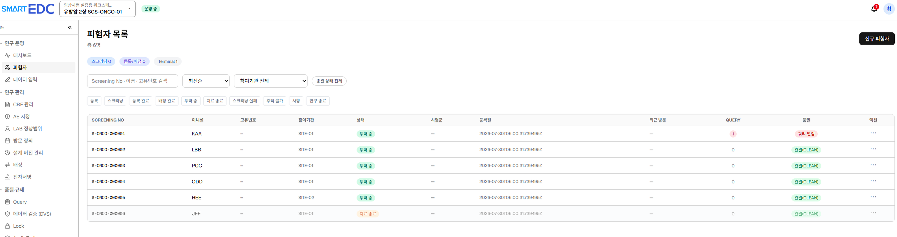
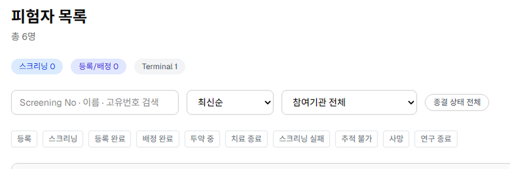
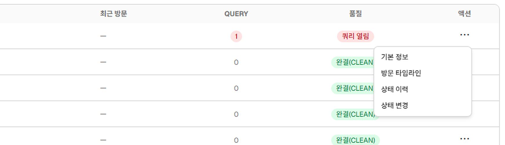
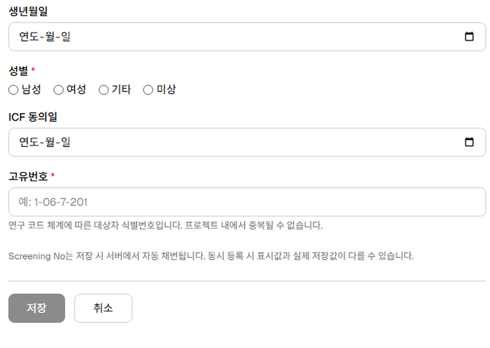
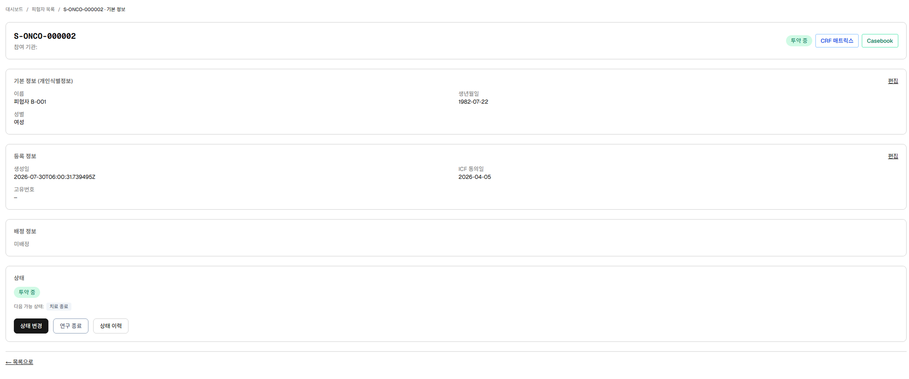
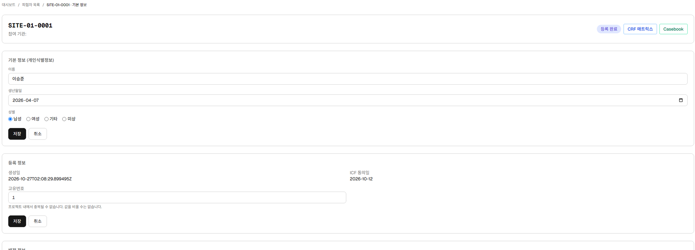
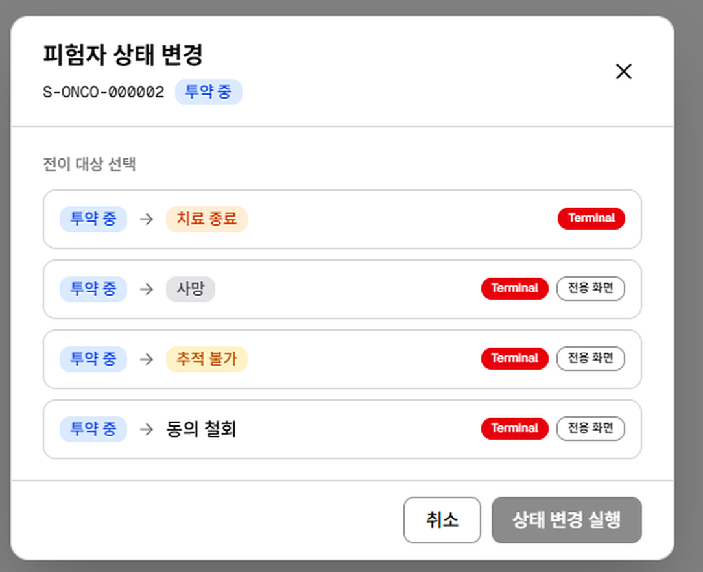
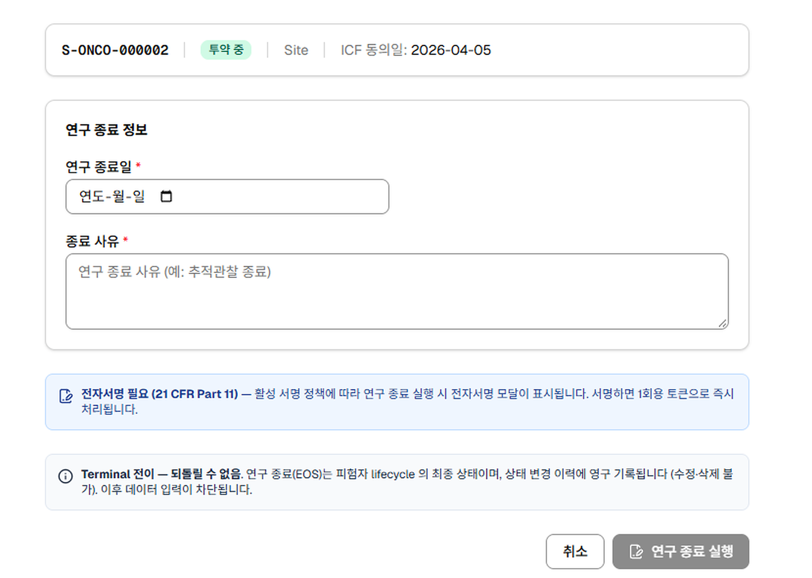
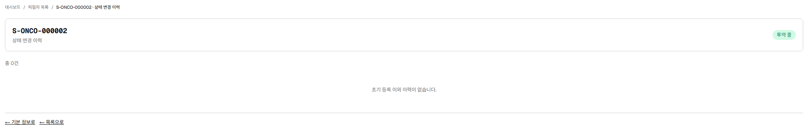

피험자
SCR-SUBJ-001·002·003·004·009·017 · 목록 · 등록 · 상세 · 상태 변경
피험자 목록
- 1.1화면 구성
- 1.2검색 · 정렬 · 필터
- 1.3표의 열 구성과 행 액션
- 1.4신규 피험자 등록
1.1화면 구성
개요
프로젝트에 등록된 피험자를 모아 보는 화면입니다. 피험자 업무의 시작점이며, 등록·상태 변경·방문·데이터 입력으로 가는 길이 모두 이 목록에서 갈라집니다. 자기 참여 기관만 담당하는 역할에게는 그 기관의 피험자만 표시됩니다.
화면 설명

신규 피험자 — 피험자를 새로 등록합니다 1.4. 등록 권한이 없거나 프로젝트가 종료·보관 상태이면 이 버튼이 표시되지 않습니다.
검색 · 정렬 · 참여기관 · 종결 상태 전체 — 목록을 좁히는 네 가지 수단입니다 1.2.
상태 필터 — 10가지 상태를 선택해 걸러냅니다 1.2.
왼쪽 메뉴의 연구 운영 > 피험자 로 언제든 이 목록에 돌아올 수 있습니다.
총 N명 — 필터를 적용한 뒤의 전체 인원입니다. 현재 쪽에 보이는 행 수와는 다를 수 있습니다 (한 쪽에 20명).
집계 배지 3종 — 스크리닝 · 등록/배정 · Terminal 입니다. 아래 유의사항을 확인하십시오.
표 — 피험자 한 명이 한 행입니다. 행을 선택하면 그 피험자의 화면으로 이동합니다 1.3.
화면 위쪽에서 워크스페이스와 프로젝트를 전환할 수 있습니다. 프로젝트가 바뀌면 목록도 함께 바뀝니다.
유의사항
필수 확인 데이터 손상 · 폼 완료 불가
- • 집계 배지 3종의 합은 총원과 다릅니다. 등록 과 투약 중 상태가 세 배지 어디에도 집계되지 않기 때문입니다. 캡처가 그 예로, 6명 중 5명이 투약 중인데 「등록/배정 0」 으로 표시됩니다. 인원은 총 N명 과 상태 필터로 확인하십시오.
1.2검색 · 정렬 · 필터
개요
목록을 좁히는 수단은 다섯 가지이며 서로 겹쳐 적용됩니다. 조건을 바꾸면 쪽 번호가 1쪽으로 돌아가고 총 인원도 다시 계산됩니다.
화면 설명

검색 — Screening No · 이름 · 고유번호 세 가지로 찾습니다. 입력을 멈추면 잠시 뒤 자동으로 검색됩니다.
정렬 — 최신순 · Screening No · 등록일 · 상태순 중에서 선택합니다. 기본값은 최신순입니다.
참여기관 — 특정 기관의 피험자만 표시합니다. 접근 가능한 기관이 두 곳 이상일 때만 표시되며, 자기 기관만 담당하는 역할에게는 대신 내 참여기관 고정 배지가 표시됩니다.
종결 상태 전체 — Terminal 5종(스크리닝 실패 · 치료 종료 · 추적 불가 · 사망 · 연구 종료)을 한 번에 선택하거나 해제합니다.
상태 필터 — 10가지 상태를 개별로 선택합니다. 여러 개를 함께 선택하면 그중 하나라도 해당하는 피험자가 표시됩니다. 선택된 칩은 색이 채워집니다.
총 N명 은 지금 적용된 조건의 전체 인원입니다.
집계 배지 3종은 현재 쪽에 불러온 행만 세며, 등록·투약 중 상태는 어느 배지에도 포함되지 않습니다 (1.1 유의사항 참조).
제목 아래 영역 전체가 필터 영역입니다. 조건을 지우려면 선택된 칩을 다시 선택하십시오.
유의사항
오해하기 쉬운 동작
- • 검색은 이름 으로도 됩니다. 다만 표에는 이름 대신 이니셜 이 표시됩니다 — 이름은 개인식별정보라 전 역할이 보는 목록에 두지 않기 때문입니다.
1.3표의 열 구성과 행 액션
개요
표는 11개 열로 이루어집니다. 왼쪽 절반이 누구인가(식별·소속·상태), 오른쪽 절반이 어떤 상태인가(방문·Query·품질)이며, 맨 오른쪽 액션 열에서 그 피험자의 화면으로 이동합니다.
화면 설명


⋯ — 행 액션 메뉴를 펼칩니다. 자기 자리에서 메뉴가 열리므로 행이 이동하지는 않습니다.
메뉴 항목은 네 가지입니다 — 아래 목록을 참조하십시오. 상태 변경 은 Terminal 상태의 피험자나 권한이 없는 경우 선택할 수 없습니다.
열 순서 — Screening No · 이니셜 · 고유번호 · 참여기관 · 상태 · 시험군 · 등록일 입니다. 이름 대신 이니셜이 표시됩니다.
Screening No 는 시스템이 자동 채번한 식별번호이고, 고유번호 는 연구 코드 체계에 따라 사람이 입력하는 다른 축입니다. 값이 없으면 — 입니다.
Query — 미해결 Query 건수입니다. 1건 이상이면 붉게 표시됩니다.
품질 — 검증 대기 · SDV 완료 · 쿼리 열림 · 쿼리 답변 · 완결(CLEAN) 5종 중 하나입니다.
최근 방문 열은 현재 모든 행에서 — 로 표시됩니다. 방문 수행일은 방문 타임라인에서 확인하십시오 2.3.
⋯ 액션 메뉴의 네 가지
- • 기본 정보 — 피험자 상세 화면 2.1
- • 방문 타임라인 — 계획·수행 방문 전체 2.3
- • 상태 이력 — 상태가 바뀐 기록 3.3
- • 상태 변경 — 전이 대상 선택 창 3.1
유의사항
오해하기 쉬운 동작
- • 행을 직접 선택하는 것과 메뉴의 「기본 정보」는 도착하는 화면이 다릅니다. 행을 선택하면 여러 영역을 한 화면에 모은 Patient Profile 로, 메뉴의 기본 정보 는 인적 사항·등록 정보 중심의 상세 화면 2.1으로 이동합니다.
1.4신규 피험자 등록
개요
피험자를 새로 등록합니다. 별표가 붙은 항목은 모두 입력해야 저장할 수 있습니다. ICF 동의일을 입력했는지에 따라 생성되는 상태가 달라지므로, 동의서를 이미 받았다면 여기에서 함께 입력하는 편이 상태 전이를 한 번 줄입니다.
화면 설명


귀속 Site * — 피험자가 속할 참여 기관입니다. 접근 권한이 두 곳 이상에 걸쳐 있을 때만 표시되며, 한 곳뿐이면 시스템이 자동으로 배정합니다.
이름 * — 개인식별정보입니다. 목록에는 표시되지 않습니다.
이니셜 * — 목록에 표시되는 약칭입니다. 이름에서 자동으로 만들어지지 않으므로 직접 입력합니다.
생년월일 — 선택 항목입니다. 오늘 이후 날짜는 선택할 수 없습니다.
성별 * — 남성 · 여성 · 기타 · 미상 중에서 선택합니다.
ICF 동의일 — 선택 항목이지만 생성 상태를 가릅니다. 입력하면 스크리닝, 비워 두면 등록 상태로 생성됩니다. 오늘 이후 날짜는 입력할 수 없습니다.
고유번호 * — 연구 코드 체계에 따른 식별번호입니다. 최대 50자이며 프로젝트 안에서 중복될 수 없습니다.
저장 — 필수 항목이 모두 채워질 때까지 흐리게 표시됩니다. ICF 동의일을 입력했으면 저장 후 그 피험자의 상세 화면으로, 비워 두었으면 목록으로 이동합니다.
머리 안내 — 귀속 기관은 접근 권한에 따라 시스템이 배정하며, 여러 기관에 걸쳐 있을 때만 직접 선택합니다.
배너가 생성될 상태를 미리 알려 줍니다. ICF 동의일을 입력하면 배너 문구가 스크리닝 으로 바뀝니다.
선택 칸 아래에 왜 기관을 지정해야 하는지 안내됩니다.
취소 — 입력한 내용이 있으면 폐기 여부를 먼저 확인합니다.
고유번호 칸 아래에 중복 불가 안내가 표시됩니다. 중복 여부는 저장할 때 시스템이 판정하므로, 입력 중에는 알려 주지 않습니다.
Screening No 는 입력 항목이 아닙니다 — 저장할 때 시스템이 자동으로 채번합니다.
유의사항
필수 확인 데이터 손상 · 폼 완료 불가
- • 고유번호가 다른 참여 기관에서 이미 쓰이고 있어도 입력 중에는 알 수 없습니다. 자기 기관만 담당하는 역할은 다른 기관의 피험자가 목록에 보이지 않기 때문입니다. 저장할 때 중복으로 거절되면 연구 코드 체계를 확인한 뒤 다른 값을 입력하십시오.
피험자 상세
- 2.1화면 구성
- 2.2기본 정보 · 등록 정보 편집
- 2.3방문 타임라인
2.1화면 구성
개요
한 피험자의 인적 사항·등록 정보·배정·상태를 위에서 아래로 쌓아 보여 주는 화면입니다. 상태를 바꾸는 세 가지 액션도 이 화면 아래쪽에 모여 있습니다.
화면 설명

기본 정보 (개인식별정보) > 편집 — 이름·생년월일·성별을 수정합니다 2.2. 권한이 없으면 이 링크가 표시되지 않습니다.
등록 정보 > 편집 — 고유번호를 수정합니다 2.2.
상태 변경 — 전이 대상 선택 창을 엽니다 3.1. 갈 수 있는 상태가 없거나 완전 잠금 상태이면 선택할 수 없습니다.
연구 종료 — 연구 종료(EOS) 전용 화면으로 이동합니다 3.2. 투약 중 또는 치료 종료 상태이고 권한이 있을 때만 표시됩니다.
상태 이력 — 상태가 바뀐 기록을 조회합니다 3.3.
이동 경로로 목록에 돌아갈 수 있습니다. 화면 맨 아래의 ← 목록으로 도 같은 자리로 이동합니다.
머리의 상태 배지는 아래 상태 카드의 배지와 같은 값입니다. 잠금이 걸려 있으면 자물쇠 배지가 함께 표시됩니다.
CRF 매트릭스 · Casebook — 그 피험자의 CRF 입력 현황과 자료 출력으로 이어지는 다른 화면입니다. 본 분권에서는 다루지 않습니다.
다음 가능 상태 — 시스템이 계산한 전이 가능 상태입니다. 여기에 없는 상태로는 바꿀 수 없습니다.
배정 정보 — 무작위배정 전에는 미배정 입니다. 배정되면 시험군과 배정번호가 표시됩니다.
고유번호 가 — 인 것은 필수 입력으로 바뀌기 전에 등록된 피험자이기 때문입니다. 편집에서 값을 채울 수 있습니다 2.2.
유의사항
오해하기 쉬운 동작
- • 머리의 참여 기관 이 공란으로 표시될 수 있습니다. 상세 화면이 기관 코드를 받지 못해 생기는 현상이며 피험자의 소속이 없다는 뜻이 아닙니다 — 소속 기관은 목록의 참여기관 열 에서 확인하십시오.
2.2기본 정보 · 등록 정보 편집
개요
기본 정보 와 등록 정보 는 서로 다른 카드이고 저장도 따로 합니다. 한쪽을 편집하는 동안 다른 쪽은 그대로 조회 상태로 남습니다. 두 카드를 다 고쳤다면 저장을 두 번 눌러야 합니다.
화면 설명

이름 — 비워 둘 수 없습니다. 공란이면 저장이 흐리게 표시됩니다.
생년월일 — 날짜를 선택합니다.
성별 — 남성 · 여성 · 기타 · 미상 중에서 선택합니다.
저장(기본 정보) — 인적 사항 세 항목만 반영합니다.
고유번호 — 연구 코드 체계에 따른 식별번호입니다. 값을 비울 수 없습니다 — 비운 채로 저장하면 거절됩니다.
저장(등록 정보) — 고유번호만 반영합니다.
취소 — 변경을 버리고 그 카드만 조회 상태로 돌아갑니다.
등록 정보에도 같은 취소 가 있습니다.
생성일 과 ICF 동의일 은 읽기 전용입니다 — 편집 상태에서도 입력란으로 바뀌지 않습니다.
고유번호 칸 아래에 중복 불가와 공란 불가가 함께 안내됩니다.
머리 카드는 편집 중에도 바뀌지 않습니다 — 상태 배지와 이동 버튼이 그대로 유지됩니다.
유의사항
필수 확인 데이터 손상 · 폼 완료 불가
- • 이름·생년월일·성별 편집은 개인식별정보 열람 권한과 수정 권한을 모두 가진 역할만 할 수 있습니다. 연구책임자(PI)는 값을 볼 수는 있지만 수정할 수 없어 편집 링크가 표시되지 않습니다. 고유번호 편집은 수정 권한만으로 가능합니다.
2.3방문 타임라인
개요
한 피험자의 방문을 단계별로 묶어 보여 주는 화면입니다. 계획일과 실제 수행일, 허용 오차, 수행 여부, 결합된 CRF 의 입력 상태를 한 줄에서 확인할 수 있습니다. 방문 관리 전반은 방문 분권에서 다루며, 여기에서는 피험자에서 들어왔을 때 보이는 것만 설명합니다.
화면 설명

방문 수동 추가 — 계획에 없던 방문을 추가합니다. Terminal 상태의 피험자에게는 표시되지 않습니다.
Cycle 수동 추가 — 주기 방문 그룹의 다음 주기를 한꺼번에 전개합니다. 주기 그룹이 있는 프로젝트에서만 표시됩니다.
방문 그룹 / Gantt 타임라인 — 보기 방식을 전환합니다. 기본은 단계별로 접고 펼치는 방문 그룹입니다.
이동 경로 또는 왼쪽 위 화살표로 들어온 자리로 돌아갑니다.
요약 줄 — Screening No · 고유번호 · 이름 · 상태 · 참여 기관과 함께 총 N건 · 방문 수행 · 방문 진행 · 방문 예정 · 미방문 집계가 표시됩니다.
단계 머리줄 — 선별 단계 · 치료 단계처럼 방문을 묶는 단위입니다. 괄호 안이 그 단계의 방문 수이고, 시험군이 있으면 함께 표시됩니다.
방문 한 줄 — 기준(어느 날짜로부터 세는가) · 계획일 · 실제일 · 허용 오차 · 수행 상태 순으로 표시됩니다.
방문에 CRF 가 결합되어 있으면 그 이름과 입력 상태가 아래에 이어집니다. 결합된 CRF 가 없으면 결합된 CRF 없음 으로 표시됩니다.
계획일이 지났는데 수행되지 않은 방문은 ✗ 미방문 으로 붉게 표시되고 계획일에 밑줄이 붙습니다.
유의사항
오해하기 쉬운 동작
- • 이 화면은 방문 영역의 화면이며 피험자 목록과 데이터 입력 양쪽에서 들어옵니다. 들어온 경로에 따라 왼쪽 위 화살표가 돌아가는 자리가 달라집니다.
상태 변경
- 3.1전이 대상 선택
- 3.2연구 종료
- 3.3상태 변경 이력
3.1전이 대상 선택
개요
지금 상태에서 갈 수 있는 상태만 골라 보여 줍니다. 선택지는 현재 상태와 내 역할 두 축으로 걸러지므로 사람마다 다르게 보일 수 있습니다. 선택지가 비어 있다면 전이할 곳이 없거나 권한이 없는 것입니다.
화면 설명

투약 중 → 치료 종료 — 선택하면 치료 종료 사유 5종이 이어서 표시됩니다. 정상 완료 만 이 창에서 바로 처리되고, 나머지 사유는 방문 일정 정리가 뒤따르는 조기 종료 전용 화면으로 이동합니다.
투약 중 → 사망 — 사망 처리 전용 화면으로 이동합니다.
투약 중 → 추적 불가 — 추적 불가 처리 전용 화면으로 이동합니다.
투약 중 → 동의 철회 — 동의 철회 전용 화면으로 이동합니다. 철회는 전자서명이 필요합니다.
상태 변경 실행 — 전이 대상을 고르기 전에는 흐리게 표시됩니다. 전용 화면 배지가 붙은 전이를 고르면 버튼 이름이 전용 화면으로 이동 으로 바뀝니다.
창 머리에 대상 피험자와 현재 상태 가 표시됩니다. 다른 피험자가 아닌지 여기에서 확인하십시오.
선택지 오른쪽의 배지 2종 — Terminal 은 되돌릴 수 없는 전이라는 뜻이고(선택하면 창 안에 경고가 함께 표시됩니다), 전용 화면 은 이 창에서 끝나지 않고 별도 화면에서 처리한다는 뜻입니다.
취소 — 아무 것도 바꾸지 않고 창을 닫습니다.
창 밖을 선택하거나 닫기를 선택해도 같습니다.
유의사항
필수 확인 데이터 손상 · 폼 완료 불가
- • 연구 종료(EOS)는 이 창에 없습니다. 전용 화면에서만 수행하며, 상세 화면의 연구 종료 버튼이 유일한 입구입니다 3.2. 또한 잠금이 걸린 피험자는 Terminal 선택지가 전부 흐리게 표시되므로 잠금을 먼저 해제해야 합니다.
3.2연구 종료
개요
피험자의 연구 참여를 최종적으로 끝내는 화면입니다. 투약 중 또는 치료 종료 상태에서만 수행할 수 있으며, 프로젝트의 서명 정책에따라 전자서명이 요구됩니다. 되돌릴 수 없는 전이이므로 날짜와 사유를 확인한 뒤 실행하십시오.
화면 설명

연구 종료일 * — 필수 입력입니다. 오늘 이후 날짜는 선택할 수 없고, ICF 동의일보다 앞선 날짜를 넣으면 확인을 요구하는 문구가 표시됩니다.
종료 사유 * — 필수 입력입니다. 상태 변경 이력에 그대로 남으므로 “예: 추적관찰 종료” 와 같이 사실을 적으십시오.
연구 종료 실행 — 두 필수 항목이 채워질 때까지 흐리게 표시됩니다. 전자서명이 필요한 설정이면 선택 즉시 전자서명 창이 표시되고, 서명을 마쳐야 종료가 수행됩니다.
대상 피험자 요약 — Screening No · 현재 상태 · 참여 기관 · ICF 동의일이 표시됩니다.
파란 안내 — 서명 정책이 켜져 있으면 실행 시 전자서명 창이 표시된다는 예고입니다. 서명 정책이 없는 프로젝트에서는 이 안내가 표시되지 않습니다.
회색 안내 — 연구 종료는 되돌릴 수 없고 상태 변경 이력에 영구 기록되며, 이후 데이터 입력이 차단된다는 설명입니다.
취소 — 아무 것도 수행하지 않고 들어온 자리로 돌아갑니다.
유의사항
필수 확인 데이터 손상 · 폼 완료 불가
- • 연구 종료는 되돌릴 수 없고 이후 데이터 입력이 차단됩니다. 미해결 Query 나 입력하지 않은 CRF 가 남아 있지 않은지 먼저 확인하십시오. 잠금이 걸린 피험자는 종료가 거절되므로 잠금을 먼저 해제해야 합니다.
3.3상태 변경 이력
개요
그 피험자의 상태가 언제 · 누가 · 왜 바뀌었는지를 시간 순으로 보여 주는 화면입니다. 감사 추적 자료이므로 기록을 수정하거나 삭제할 수 없고, 조회만 가능합니다.
화면 설명


← 기본 정보로 — 그 피험자의 상세 화면으로 돌아갑니다 2.1.
← 목록으로 — 피험자 목록으로 돌아갑니다 1.1.
총 N건 — 기록된 상태 변경 건수입니다.
기록이 없으면 “초기 등록 이외 이력이 없습니다.” 가 표시됩니다 — 등록 이후 상태가 한 번도 바뀌지 않았다는 뜻입니다.
머리의 배지는 현재 상태입니다. 아래 기록의 마지막 상태와 같아야 합니다.
카드 머리 — 바뀌기 전 상태 → 바뀐 뒤 상태 입니다. 잠금을 넘어 수행된 전이에는 Lock Override 배지가 함께 붙습니다.
일시 — 전이가 수행된 시각입니다.
수행자 — 이름과 역할이 함께 기록됩니다.
사유 — 전이할 때 입력한 사유입니다. 시스템이 자동으로 수행한 전이에는 그 경로를 나타내는 코드가 기록되기도 합니다.
유의사항
오해하기 쉬운 동작
- • 현재 상태가 투약 중 인데 총 0건 으로 표시될 수 있습니다. 화면의 오류가 아니라 그 피험자의 상태 변경이 기록으로 남지 않은 경우이므로, 전이 경위를 확인해야 한다면 Audit Trail 을 함께 조회하십시오.